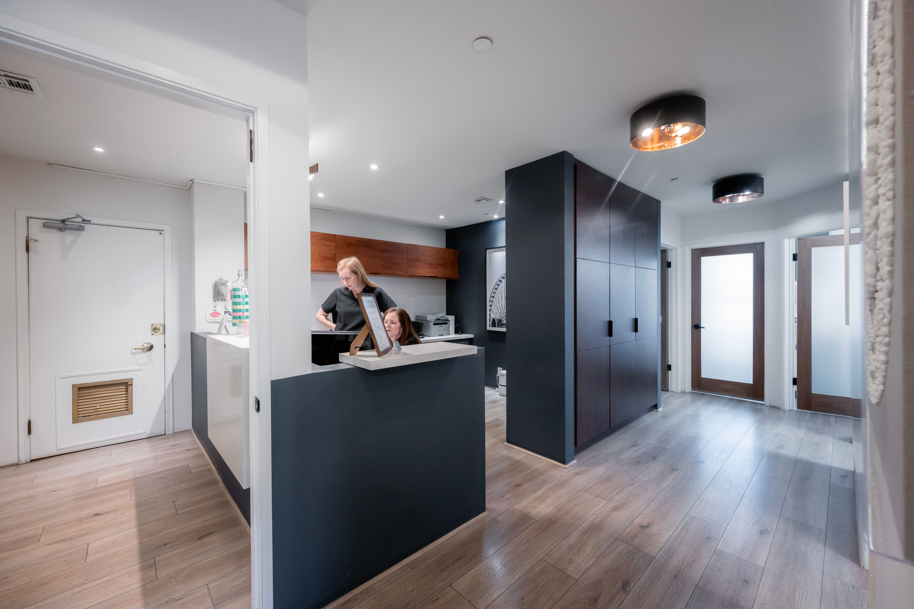
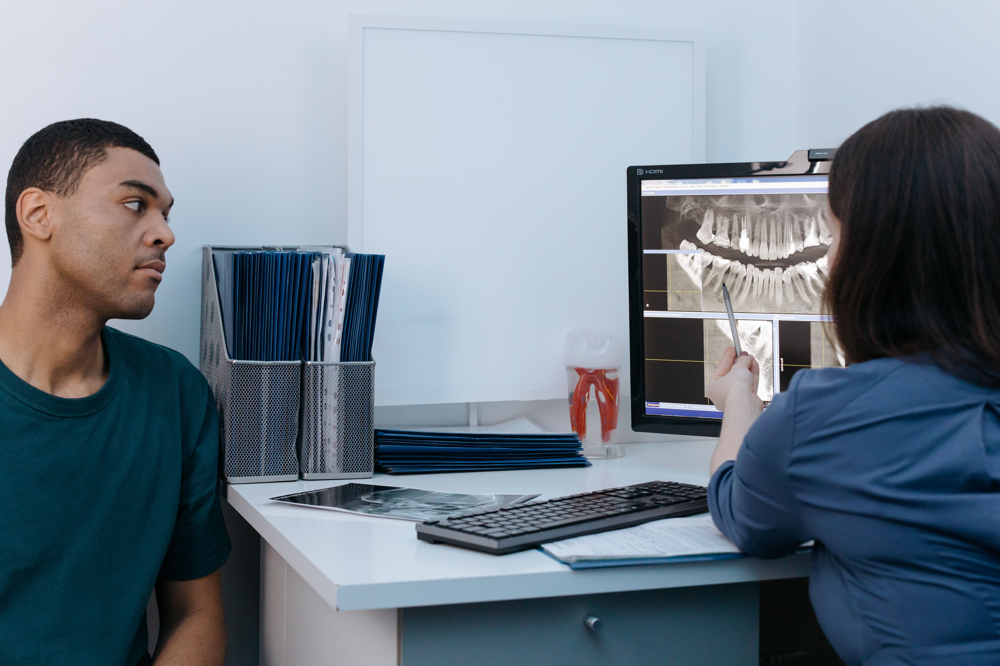
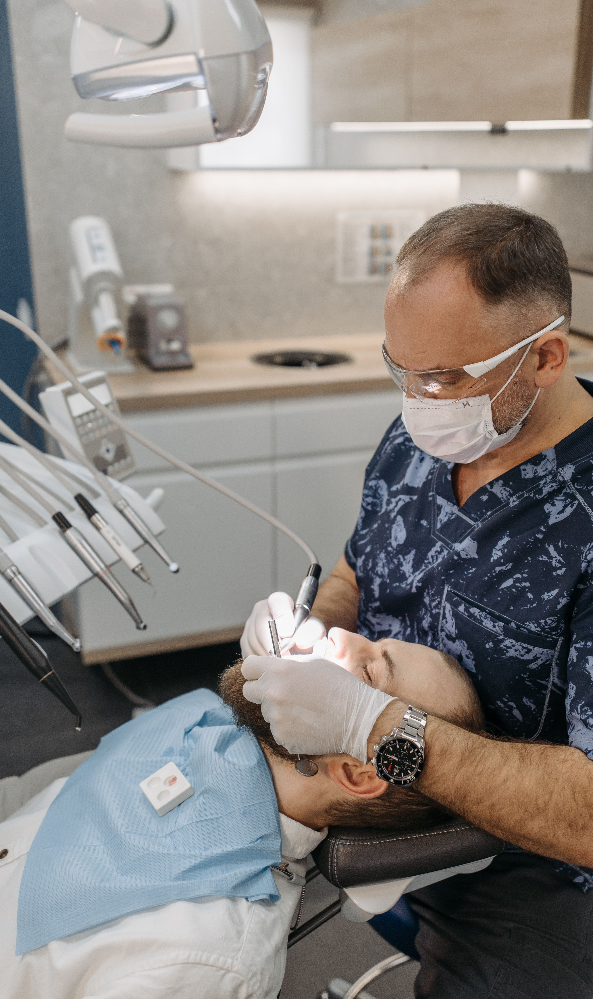
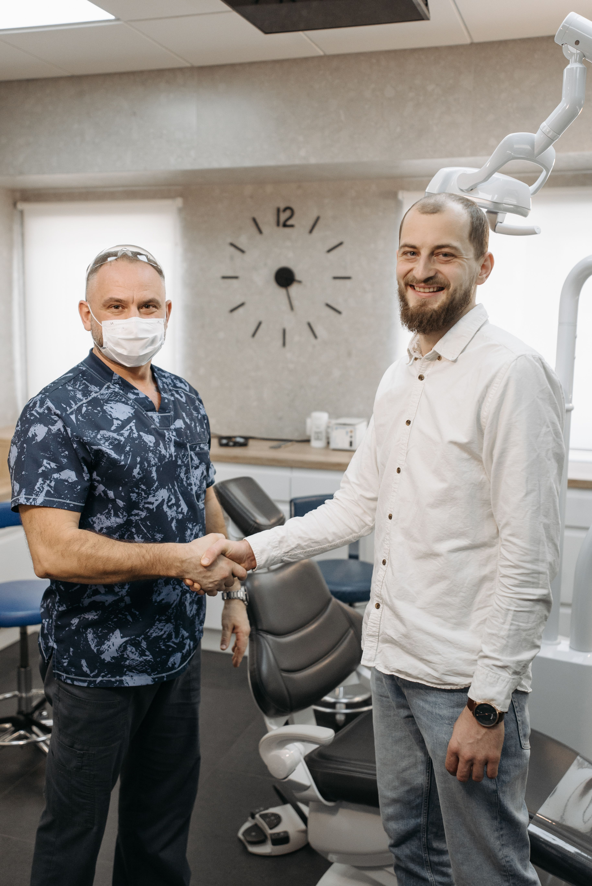

The unknown
feels
Until you know what to expect.

bigger.
At VERA, we turn uncertainty into clarity — showing you exactly what a visit involves, at your own pace, before you ever sit down.
Clarity changes
how care feels.
A clearer, calmer experience begins before treatment — not during it. That idea shapes every part of how VERA is designed to work, from your first question to the moment you leave.
Start with what's actually
on your mind.
Choose the one that fits, and we'll show you the path that matches it — not a generic list of services.
Choose what's on your mind
Select any item on the left — the service, what it covers, and your next step will appear here.
Four care pathways,
plainly explained.
General guidance on what each pathway involves. Not a diagnosis, and not a promised outcome — a starting point for a conversation.
General Dentistry
Checkups, cleanings and early prevention — where most first visits begin.
Ask about this pathwaySix small decisions,
made before you arrive.
None of this is about the dentistry itself — it's about everything around it that usually goes unexplained.
Digital intake
Your health history and consent forms, filled out from home — check-in becomes a formality, not a form.
Nothing about your visit
is a surprise.




A warm welcome, no paperwork pile.
Check in at reception, five minutes early — a short digital form on a tablet, nothing more.
A space built for calm,
not just function.
Three real areas of the clinic — tap to look around before you visit.
Arrival & check-in
Natural light, a short digital form, and a seat while your room is readied — nothing to fill out twice.
A first consultation,
explained plainly.
A first visit is a conversation, not a commitment. Here's what that generally involves — what's discussed, what it costs to ask, and what happens next.
Ready when
you are.
A simulated inquiry for this demonstration — submitting it does not book a real appointment or contact an actual clinic.
Tell us what you need, we'll take it from there.
- We reply within one business day (in a real deployment)
- No obligation, no charge for inquiries
- Flexible morning & evening slots